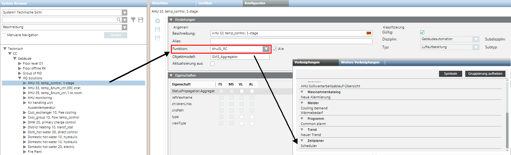
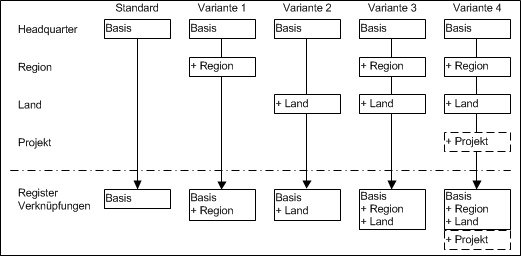
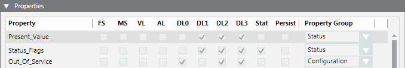
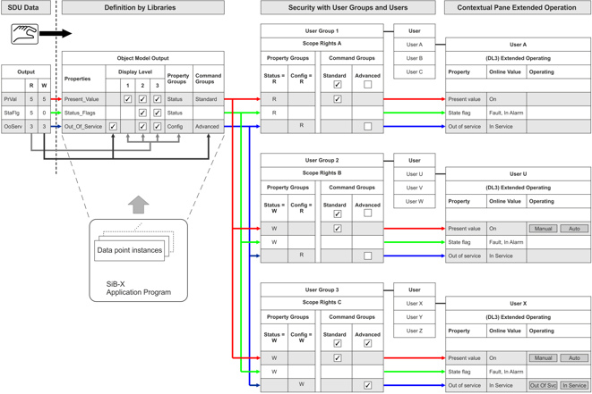

Special Features for Desigo PX
The management platform supports a number of subsystems. Proprietary development of these BACnet systems may result in limitations in engineering and operation. The following restrictions apply only when integrating Desigo PX.
Integration in FEP not Supported
Do not integrate Desigo PX via a FEP installation (FEP means remote integration on another computer).
Online import is not supported with FEP installation. Therefore, integration must always be performed via the management platform BACnet network.
Scheduling
Object References
The BACnet object references of the ASCHED, BSCHED, and MSCHED function blocks cannot be changed from the management platform, since they are read only. The system does not support writing object references of the corresponding function block using List_Of_Name_Reference.
Interconnected SCHED blocks
The ASCHED, BSCHED, MSCHED, and AnySCHED blocks, embedded in the application program, are automatically displayed in links, if the following conditions are met:
- The SCHED blocks used come from existing application solutions.
- The applications must include a correct function name such as Ahu01, Vnt01, CGrp01, Exg01, CGen01, DhwSol10, DhwDir, DhwEl, DhwHyd, Dsh10, HGrp01, HGen01, HCGrp01, Ahu35, DhwSol.
- The technical address hierarchy level does not exceed 3.
The SCHED blocks, created to supplement application-specific blocks, can be manually linked.
- In System Browser, select an object (for example, plant).
- Click the Object Configurator tab.
- Open the expander Related items.
- Select the object for linking (for example, scheduler) and drag-and-drop it to the Related Items expander.
- Click Save.
The link is displayed in the Related Items expander under Scheduler.
Regional Modification to Object Links
The function automatically creates related items in the Related Items tab. The function is always used if additional related items are to be created automatically. This is typically the case if a headquarters solution for a Desigo PX application, for example: Ahu01 on a regional or RC standard, is changed to: Ahu01_RC. To this end, the DynamicLinks.txt configuration file must be extended to include the corresponding function name. The modification can be made in the library on level L2-Region, L3-RCs or L4-Project.

Application Variants for Multiple Configuration Files
All created configuration files are evaluated to automatically generate related items. A configuration file generated in the project can be used on any variant but is only depicted here in variant 4.

Description and Syntax of DynamicLinks.txt File
The tables below describe the keywords used and behavior of operators.
Description of the DynamicLinks.txt file | |
Keyword | Description |
Link | The section description within the configuration file. For the same function, the same section designation must be used on one of the following levels (pay attention to capitalization, spaces, etc.). Any new section designation must be fully defined once (see example 1 PX Schedule and example 3 PX Common Alarms (Zone). Any subsequent (in the hierarchy) section need not be fully defined. The designation link is always required and must at a minimum include an entry for MaxLevel, Source.Model, Source.Function, or Target.Model (see example 2 and 3 using the keyword PX Schedules). In examples 2 and 3, the additional definitions are already defined in the headquarters DynamicLinks.txt file (example 1). NOTE: This is not the grouping designation in the Related Items tab. Grouping is assigned automatically based on internal programming rules. |
MaxLevel | Defines the maximum hierarchy depth of the technical address after a block (Target.Model) is scanned. |
Source.Model | Defines whether or not it is even scanned. If the search criteria in Source.Model (object model on the Settings expander) and Source.Function (function on Settings expander) do not match, the next section designation is checked directly. |
Source.Function | Same response as for Source.Model description. |
Target.Model | Defines the object models of the data points to be linked, or to be searched for. The search criteria for Source.Model and Source.Function must be met. |
Syntax for the DynamicLinks.txt File | |
Operator | Description |
+= | Query is added to the execution list. |
-= | Query is deleted from the execution list. |
= | Query is overwritten on the execution list. |
The result of the execution list always occurs over all defined levels, but must have the same keyword, for example: PX Schedules.
Calculation of Execution List for Section Designation | ||||
Level | Operator | Execution List | Interim Result | Search criterion |
HQ | = |
|
|
|
Region | += |
|
| nothing happens to a and b e and f were added |
Country | -= |
|
| a and e are removed g does not exist or was removed by a higher level so that it is not evaluated |
project | -= |
|
| b, c and d are removed Final result: Only f is used as a search criterion |
Example 1: DynamicLinks.txt file by Headquarters
The DynamicLink.txt file supplied by Headquarters is saved in folder [Installation drive:]\[Installation folder]\[Project]\libraries\BA_Device_PX_HQ_2\DynamicLinkProviders.
Link = PX Schedules
MaxLevel = 3
Source.Model = GMS_Aggregator, GMS_desigo_px_EOT_BA_PX_Block_10
Source.Function = Ahu01, Vnt01, CGrp01, Exg01, CGen01, DhwSol10, DhwDir, DhwEl, DhwHyd, Dsh10, HGrp01, HGen01, HCGrp01, Ahu35, DhwSol
Target.Model = GMS_desigo_px_EOT_BA_PX_BSCHED_10, GMS_desigo_px_EOT_BA_PX_ASCHED_10, GMS_desigo_px_EOT_BA_PX_MSCHED_10, GMS_desigo_px_EOT_BA_PX_SCHED_10
Example 2: Extension by L2-Region
The L2 region DynamicLink.txt file is saved in folder [Installation drive:]\[Installation folder]\[Project]\libraries\BA_Device_PX_ZN_2\DynamicLinkProviders.
Link = PX Schedules
Source.Function += HGrp10_ZN
Explanation:
- The search criterion is extended to the level L2-Region with the additional entry of PX Schedules. The complete basic definition occurs at the HQ level and need not be fully redefined here.
- The definition is checked at the HQ level if data point HGrp10_ZN is selected in the System Browser.
- If created correctly, it searches for all Target.Models, available below HGrp10_ZN. Any search that matches is displayed in the Related Items tab.
Example 3: Extension by L3-Countries
The L3 regional company DynamicLink.txt file is saved in folder [Installation drive:]\[Installation folder]\[Project]\libraries\BA_Device_PX_RC_2\DynamicLinkProviders.
Link = PX Schedules
Source.Function += Ahu01_RC
Link = PX Common Alarms (Zone)
MaxLevel = 3
Source.Model = GMS_Aggregator, GMS_desigo_px_EOT_BA_PX_Block_10
Source.Function = Ahu01_RC
Target.Model = GMS_desigo_px_EOT_BA_PX_CMN_ALM_10
Explanation:
- The definition is checked at the HQ level if data point Ahu01_RC is selected in the System Browser. If created correctly, it searches for all Target.Models, available below Ahu01_RC. Any search that matches is displayed in the Related Items tab.
- The search criterion is extended to the level L3-RCs with the additional entry of PX Schedules. Overall response is the same as explained in example 2.
- The search criterion is extended to the level L3-RCs with the additional entry of PX Common Alarms (zone). All keywords must be defined on the level since this search criterion is unavailable on prior levels.
General Information on Implementation
Please comply with the following items:
- The implementation is a generic feature and can also be used for other related links (see Example 2). It requires installation of the Desigo System extension.
- Is searches for only entries in the libraries with system names PX, TRA and Desigo.
- Objects are only searched in the Logical View.
- The folder DynamicLinkProvider must be created with Desigo CC.
- The processing sequence for DynamicLinks.txt files is Headquarters > Region > RCs > Project.
- Only complete and correct entries are evaluated.
- You must restart the client after making changes to the DynamicLinks.txt file as the levels are only checked once (at start up) and compiled in a single rules set.
Creating Configuration File
- System Manager is in Engineering mode.
- In System Browser, select Management View.
- In the Extended Operation tab under Library type, select Region or RCs.
- Select Project > System Settings > Libraries > L1 Headquarters > BA > Device.
- Select the library Desigo PX.
- On the library configurator toolbar, click Customize the entire library to a lower level.
- In the dialog box, you must confirm you want to modify the library.
- Click OK.
- The structure of the selected library is cloned under the Customization Level, for which you are authorized [L2-Region] > BA > Device > Desigo PX. The structure does not, however, include configuration elements.
- Create a DynamicLinks.txt file using an editor in the folder [Installation drive:]\[Installation folder]\[Project]\libraries\BA_Device_PX_[ZN]_2\DynamicLinkProviders.
- Create the configuration for the region or RC as per examples 1 and 2 above.
NOTE: Only the deviating related items in the DynamicLinks.txt files are configured. - Using the editor, save the DynamicLinks.txt file.
- Test the created configuration.
NOTE: The client must be shut down and restarted.
Backing up the Configuration File
- System Manager is in Engineering mode.
- The DynamicLinks.txt file is saved.
- In System Browser, select Management View.
- Select Project > System Settings > Libraries.
- Select the Library Configurator tab.
- In the library list, in the Level column, select the newly created library with the designation Region or RC.
- Click Export.
- The library is exported and can be saved for back up.

NOTE:
The created DynamicLinks.txt file need to be recreated at a later date if not backed up.
As manager of the region or RC, you must ensure that the new or edited library type must be available on the installation DVD for the current and future versions.
Time Property Displayed Incorrectly
The Desigo PX Property time is always displayed as 1/1/2014 1:00:00 AM and cannot be changed from the management platform. This applies to the following Desigo PX functions:
- KickFnct
- PrdvHCtl
- OssCSolPos
- I/O blocks (operating hours maintenance)
Workaround: Change the format of this TIME property via the BACnet Browser or ABT Site.
Desigo PX BTL libraries
The Desigo PX standard library enables all BACnet properties required for operation and monitoring. There are individual cases where it may be necessary to display all the properties for a BACnet object in Desigo CC. An extended Desigo PX library can be imported for just such cases. This includes:
- BTL compliance testing
- A cuustomer requires a display of all mandatory and optional BACnet properties on the management platform.
NOTE: The extended Desigo PX library cannot be used if a project has more than 17,500 physical data points. Use the BACnet Object Browser instead.
Library BA_Device_PX_HQ_2.gms replaces BA_Device_PX_HQ_2_BTL.gms by default as part of the upgrade. Proceed as follows:
- Open the config file for the project.
- Add the following at the end of Desigo PX section:
[Desigo_PX]
UpgradeLibrary=upgradeLibraries_BTL.txt - Select Management View.
- Check the number of project languages in the Localization tab.
- Import BA_Device_PX_HQ_2_BTL.xml for each project language.
Use the following workflow to change the Desigo PX library:
- Check the number of data points.
- Import the extended library.
- Import localized texts for extended library.
- Enable the standard library for operating phases in the building.
- (Optional) Import the standard library if the extended library is no longer used.
- (Optional) Import localized texts for the standard library.
NOTE:
Desigo PX projects are updated with the standard library when upgrading to a higher version unless the config file is modified. On quality updates as part of the same version, it depends on whether the PX library is part of the update (or not). If yes, the project is updated with the standard library. Additional information is available at Procedures for PX Libraries
Assign Access Rights to Object Model
A set pattern is used to assign Desigo object properties to a Desigo CC object model. Decisive are the read and write rights as defined in the SDU (System Definition Utility is the tool for creating Meta data). This information is taken over when manually creating the library on the object model (see Assignment Concept).

We distinguish between two different groups of SDU data for assignment to the object model:
- Objects with only read rights
- Objects with read and write rights
NOTES:
‒ Read and write rights are not considered when importing a data point instance. The assignment is made per the data point type information for the corresponding object model.
‒ If project-specific modifications are required, it must be done by changing the library type.
Object Property with Read Rights Only
In the SDU, the object property is defined with read rights from 1 to 7 only. The write rights are defined as 0 (No access). In the object model for Desigo CC, assignment occurs in this case in the Property Group, with the option Status. Display levels are assigned as per the table below.
Object Model Property Group: Display Level | ||
Access Right Automation Station (CFC) | Read Right (CFC) | Display in Desigo CC |
No access | 0 |
|
Internal | 1 | (DL3) Extended operation |
Extended service | 2 | (DL3) Extended operation |
Basic service | 3 | (DL3) Extended operation |
Administration | 4 | (DL2) Operation |
Extended operation | 5 | (DL2) Operation |
Standard Operation | 6 | (DL2) Operation |
Basic operation | 7 | (DL1) State and operating pane |
Object Property with Read/Write Rights
For object properties with read and write access, assignment for the Property Groupdisplay level and Command Groupcommanding are made per the definitions in the following tables.
Property Group
The read right is evaluated and assigned for the display level accordingly.
Object Model Property Group: Display Level | ||
Access Right Automation Station (ABT Site) | Read Acess (ABT Site) | Display in Desigo CC |
No access | 0 |
|
Internal | 1 | (DL3) Extended operation |
Extended service | 2 | (DL3) Extended operation |
Basic service | 3 | (DL3) Extended operation |
Administration | 4 | (DL2) Operation |
Extended operation | 5 | (DL2) Operation |
Standard Operation | 6 | (DL2) Operation |
Basic operation | 7 | (DL1) State and operating pane |
Write access 1 to 7 is always assigned to the BACnet Editor.
Object Model Property Group: Display Level | ||
Access Right Automation Station (ABT Site) | Write Access (ABT Site) | Display in Desigo CC |
No access | 0 |
|
Internal | 1 | (DL0) BACnet Editor |
Extended service | 2 | (DL0) BACnet Editor |
Basic service | 3 | (DL0) BACnet Editor |
Administration | 4 | (DL0) BACnet Editor |
Extended operation | 5 | (DL0) BACnet Editor |
Standard Operation | 6 | (DL0) BACnet Editor |
Basic operation | 7 | (DL0) BACnet Editor |
Command Groups
A Command Group control the buttons on the corresponding operating dialog boxes. The option Standard or Advanced is assigned depending on the defined write access.
Object Model Command Group | ||
Access Right Automation Station (ABT Site) | Write Access (ABT Site) | Option |
No access | 0 |
|
Internal | 1 |
|
Extended service | 2 | Advanced |
Basic service | 3 | Advanced |
Administration | 4 | Advanced / Standard |
Extended operation | 5 | Advanced / Standard |
Standard Operation | 6 | default |
Basic operation | 7 | default |
NOTES:
− There is another group for alarms on the Command Group. The group controls the buttons for acknowledging and resetting alarms.
- The assignments listed in the tables are standard assignments. There are, however, exceptions to the rules. Exceptions can only be viewed on the object model and not listed here.
Assignment Concept
The following diagram demonstrates a possible configuration, starting with SDU data up to actual operation in Desigo CC.
Display convention in the diagram:
- Each user group is defined its own scope, instead of predefined Scope rights.
- For each object property, the state is individually identified on Property Groups (read and write access) and Command Groups (active or inactive). Settings for Scope Rights are only defined once in the system.

Diagram Key | |
Topic | Description |
SDU data | The access rights of the individual data point types for the application program (BACnet objects) are set in the SDU data. They can be modified for a specific project in ABT Site. No automatic evaluation of access rights to the corresponding object model takes place in Desigo CC. The data is derived solely from the SDU data in the object model and manually entered in the object model. In other words, there is no software connection between SDU data and the object model.
|
Object model | The object model defines, as per SDU data access rights, which display level, property groups, and command configuration applies. The settings are taken over for all data points of the same data type and apply to the entire project. Any changes to the properties must apply to the entire project and are made by changing the library type . NOTE: An individual data point cannot therefore be modified for a specific display level, property groups, and command configuration. |
Data point instances | Data point instances available in the SiB-X, are mapped by data point type for the corresponding object model. The data point instances inherit all object model definitions and cannot be changed for a specific instance. |
User group 1 User A Extended operation | User group 1 only has read access on Property Groups to the Status and to the Configuration. For Command Groups, the Default is active and for Advanced the inactive check box is selected. User A thus sees only individual properties during operation and not buttons. NOTE: The defined read right for Status has a higher priority as the selected check box for Standard. To increase readability, the check box is normally set to inactive for Standard. |
User group 2 User U Extended operation | User group 2 only has write access on Property Groups to the Status and read access to Configuration. For Command Groups, the Default is active and for Advanced the inactive check box is selected. In other words, user U sees all properties for operation and can operate the buttons on Present Value. The Out of Service buttons are hidden. |
User group 3 User X Extended operation | User group 3 has write access on Property Groups to the Status and to Configuration. For Command Groups, the Default is active and for Advanced the active check box is selected. In other words, user X sees all properties for operation and can operate the buttons on Present Value and Out of Service. |
Reading Out Project Information
The installed project base can be read out with iBase. The iBase and Scripting extension modules must be installed. Refer to the iBase description for additional information.
Online Device Functions
The management platform provides several online functions to help you in maintenance and optimization. The following table lists these functions:
BACnet Device Functions. | |
Function | Description |
Turns on/off the automation station. Notifications are suppressed in this case. | |
Runs a cold start or warm start for a BACnet device. | |
Permits a backup of program structure (ABT Site data) and the current program data (setpoints) for an automation station. Project data is not on the BACnet device if EDoS is not used. | |
Restores the program structure (ABT Site data) and current project data (setpoints) for an automation station. | |
NOTE 1:
These tools require extensive knowledge of your plant, as well as knowledge of Desigo and BACnet.
NOTE 2:
When using online tools, remember that different responses may occur depending on the BACnet system supplier.